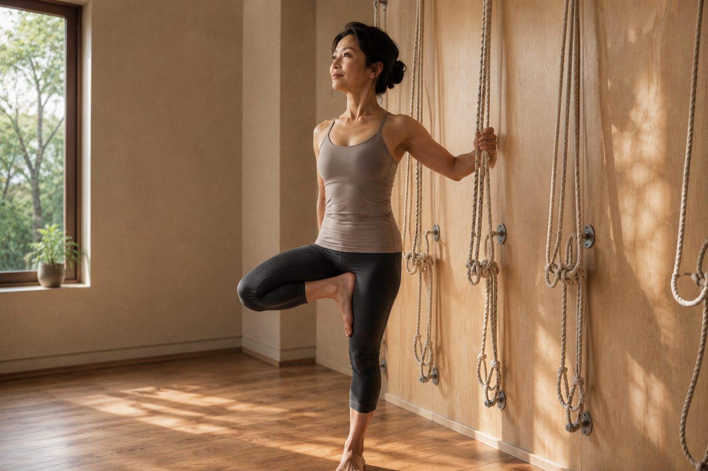

瑜伽能取代重量訓練嗎？誠實講可以跟不行的部分

- 「練瑜伽就不用重訓了」跟「瑜伽都是伸展，沒有訓練效果」，兩種說法都不完全準確。
- 瑜伽跟重量訓練各自擅長的地方不同，這篇誠實拆開來講，不會為了推銷壁繩瑜伽誇大它的效果。
- 壁繩瑜伽因為繩帶的阻力與支撐設計，在肌力刺激上比徒手瑜伽更有感，但仍然不等於重量訓練。
- 看完可以想想自己目前最欠缺的是活動度、平衡感，還是肌力，再決定怎麼安排。
「我在練瑜伽了，是不是就不用另外重訓？」這個問題背後藏著一個更直接的疑問：瑜伽到底算不算一種「有效的訓練」，還是只是伸展跟放鬆。這篇不打算含糊帶過，想誠實把瑜伽跟重量訓練各自擅長、各自做不到的部分講清楚。
先講重量訓練擅長的部分
重量訓練最核心的邏輯是「漸進超負荷」——透過持續增加重量、次數或強度，讓肌肉、骨骼持續受到超出平常習慣的刺激，進而促進肌力與肌肉量的成長，也是目前公認對維持骨密度較有幫助的訓練方式之一。這個「持續加重」的邏輯，是多數徒手瑜伽動作比較難提供的，因為徒手動作的阻力來源主要是自身體重，變化空間有限。
再講一般瑜伽擅長、重訓比較難做到的部分
瑜伽的訓練邏輯不是單純加重，而是結合呼吸、身體感知、活動度與神經系統調節。很多重訓動作專注在特定肌群的向心與離心收縮，較少同時要求呼吸配合、關節多方向活動、平衡與專注力整合，而這些恰恰是瑜伽練習的核心。柔軟度與活動度的維持，也是重量訓練較少直接處理的部分，兩者訓練的目標本來就不完全重疊。
壁繩瑜伽，站在中間的一種選項
壁繩瑜伽跟徒手瑜伽不完全一樣的地方，在於繩帶提供的支撐與阻力。某些動作透過繩帶的張力設計，能讓特定肌群有更明確的出力感受，比單純徒手動作更容易「有感」，這是它跟一般瑜伽的差異之一。但誠實地說，這仍然不等同於可調整重量、系統性漸進超負荷的重量訓練——繩帶的阻力設計初衷是支撐與引導動作，不是取代啞鈴、槓鈴這類可精確調整負荷的訓練工具。
怎麼決定自己的訓練組合
| 你比較欠缺的 | 可以優先考慮 |
|---|---|
| 活動度、身體僵硬、姿勢代償 | 瑜伽類的練習，包含壁繩瑜伽的支撐引導 |
| 肌力、肌肉量、骨密度維持 | 系統性的重量訓練，搭配專業指導漸進增加負荷 |
| 平衡感、身體感知、放鬆神經系統 | 瑜伽類練習，尤其是需要專注力與呼吸配合的動作 |
| 兩者都想兼顧 | 依時間與體力分配，兩種方式搭配進行，不必二選一 |
這張表不是要你在兩者之間選邊站，多數人其實兩者都需要一點，只是比重可能不同。與其糾結「哪一個比較好」，不如先誠實盤點自己目前最欠缺什麼，再決定怎麼分配時間與力氣。
不用二選一，但要先誠實知道自己在補什麼
瑜伽不是重量訓練的替代品，重量訓練也取代不了瑜伽在活動度與身心整合上的角色，兩者比較像是互補，不是競爭關係。這篇不會為了推銷壁繩瑜伽而誇大它能取代重訓，也不會貶低瑜伽只是伸展沒有訓練價值——誠實看清楚各自的定位，才知道自己真正需要的是什麼。
本文為一般性運動知識分享，非醫療或專業訓練建議。若有特殊健康狀況或骨質疏鬆等問題，開始任何訓練前請先諮詢醫師或物理治療等專業人員。
常見問題
只練瑜伽，肌肉量會不會不夠？
一般瑜伽對肌力有一定幫助，但漸進式增加負荷的效果通常不如專門的重量訓練。如果目標是持續增加肌肉量或肌力，單靠一般瑜伽可能不夠，需要搭配漸進超負荷的訓練方式。
壁繩瑜伽跟一般瑜伽，在肌力訓練上有差嗎？
壁繩瑜伽因為繩帶的支撐與阻力設計，能讓某些動作提供比徒手瑜伽更明確的阻力感受，在啟動特定肌群上可能更有感，但仍然不等同於可調整重量的重量訓練，兩者訓練邏輯不完全相同。
那重量訓練可以取代瑜伽嗎？
也不完全可以。重量訓練對肌力與骨密度有幫助，但瑜伽在呼吸引導、柔軟度、身體感知與神經系統放鬆上的訓練邏輯，不是單純重訓能取代的，兩者各自擅長的地方不同。
時間有限，只能選一種，該選哪個？
取決於你目前最欠缺什麼。如果活動度、平衡感、放鬆是你的優先需求，瑜伽類的方式較合適；如果肌力、骨密度是主要考量，重量訓練的角色更關鍵。這篇不替你做決定，但鼓勵先誠實了解自己的需求再選擇。